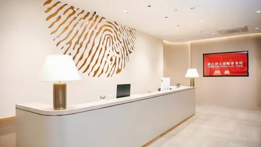
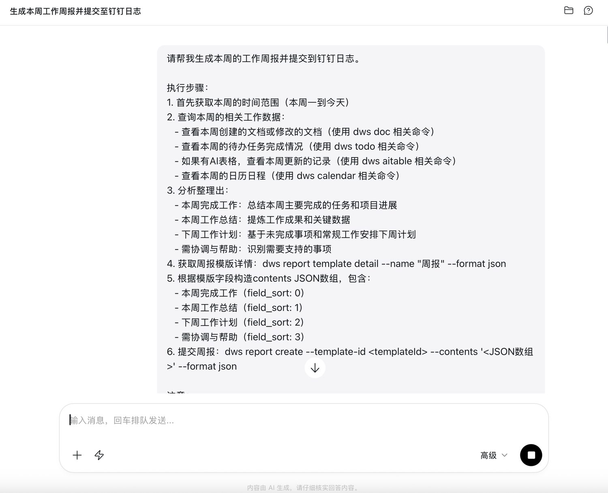
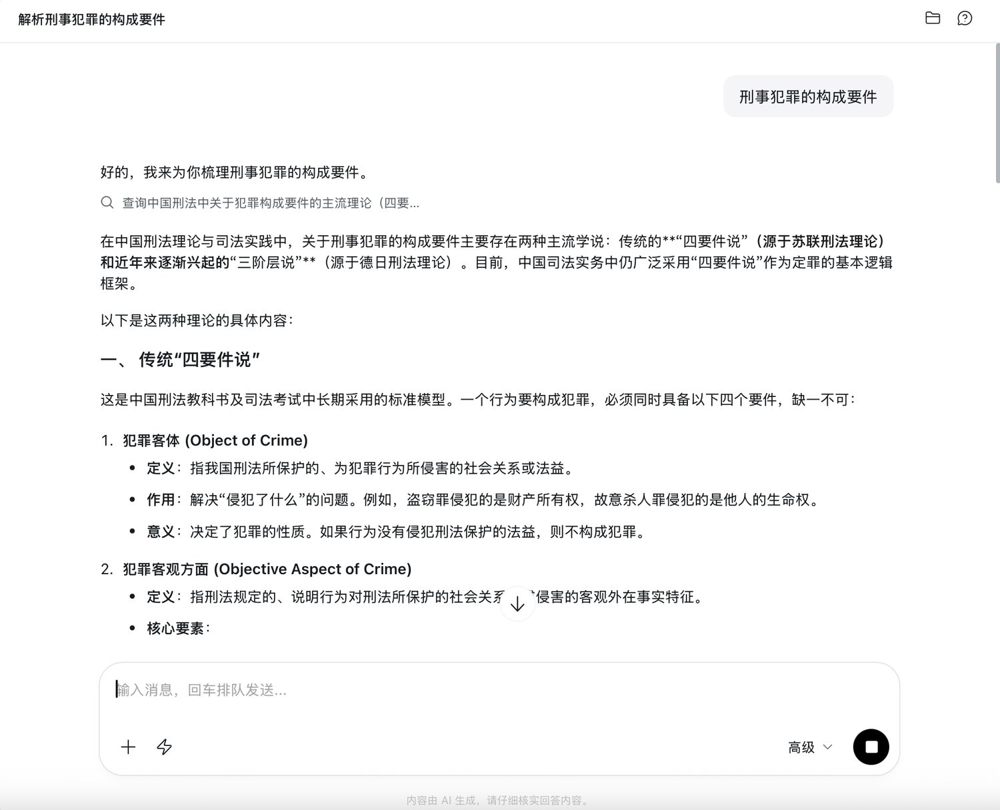
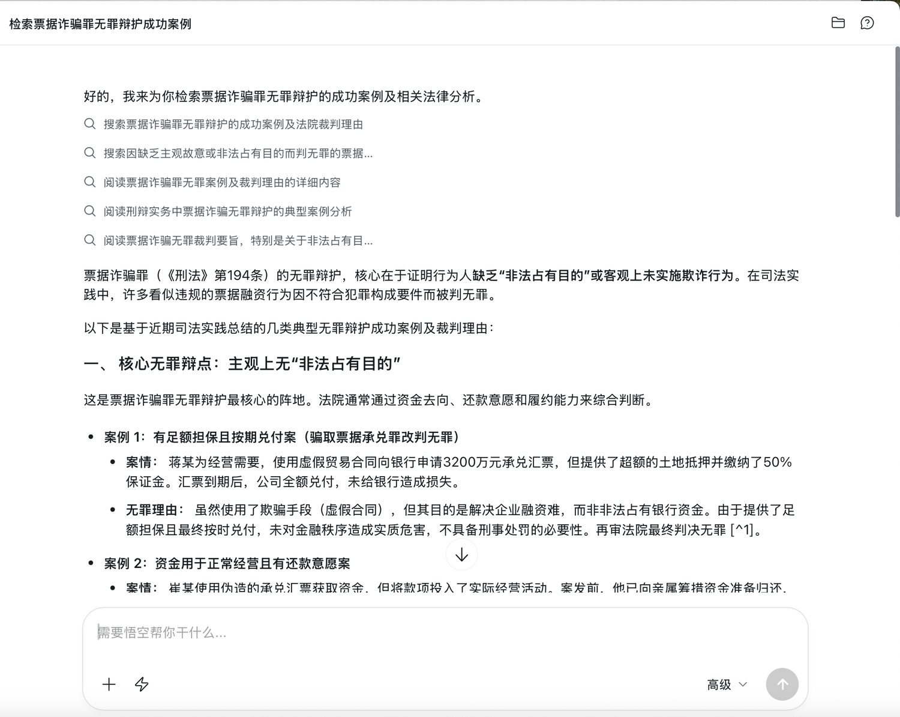
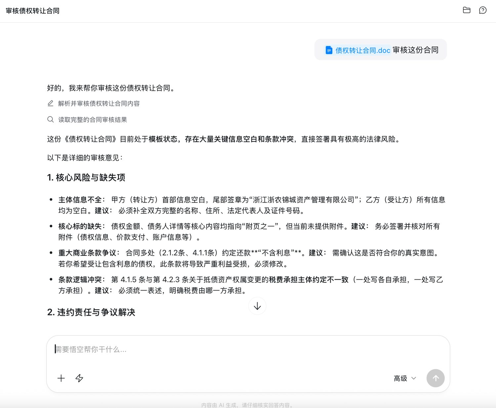

泽大律所将千问办公应用在客户服务、法律研究、合同审查等场景，实现事务处理、专业检索与风险审查的自动化与标准化，助力律师精力向高价值环节迁移。

浙江泽大律师事务所 官网浙江泽大律师事务所成立于1984年，企业规模超1000人。律所依托浙江大学法学教育与研究资源，围绕诉讼仲裁、企业合规、金融证券、知识产权、破产重整及政府法律顾问等核心业务领域，为政府部门、企事业单位及社会公众提供专业法律服务。
公司已形成覆盖全国多个城市的服务网络，是浙江省规模最大、执业律师人数最多的律师事务所之一。凭借专业化人才队伍、跨领域协同服务能力及数字化管理体系，泽大持续推动法律服务创新升级，为客户提供高效、专业的综合法律解决方案。
泽大律所将千问办公应用在客户服务、法律研究、合同审查等场景，实现事务处理、专业检索与风险审查的自动化与标准化，助力律师精力向高价值环节迁移。具体包括客户周报自动生成、刑事辩护框架搭建、长合同预审等场景。
✅ 通过千问办公，自动汇总对客资料信息，按原有服务频率与内容标准生成周报，释放律师事务性操作精力

✅ 通过千问办公先行搭建辩护框架，律师填充案情与证据


✅ 通过千问办公，使用与律所共建的合同预审技能，全片文档自动扫描并匹配相关法规，助力律师精力向高价值业务迁移

最终我们是要利用千问办公去实现自由。因为法律的价值观是公平、公正、秩序、自由，自由是放在最后的。我们有很多自由的目标，比如说我想实现时间自由、财务自由、精神自由。那么我们可以先给自己定一个小小的目标，就是用千问办公自由。